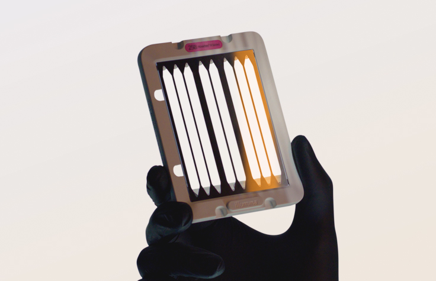
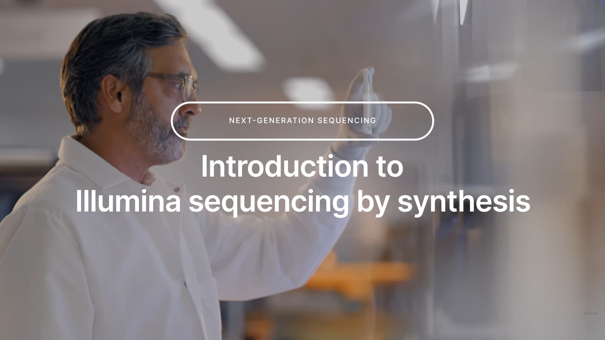
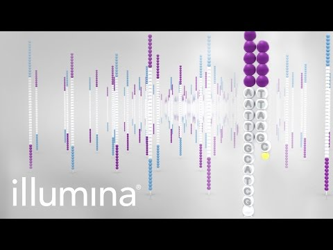
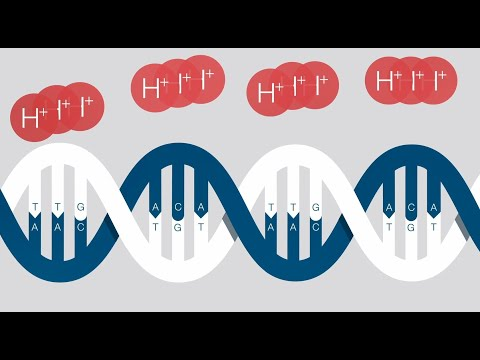
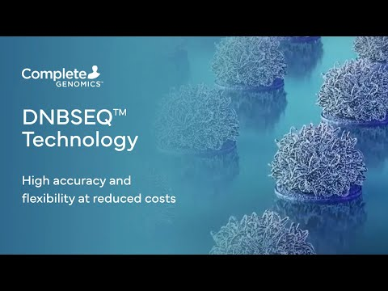
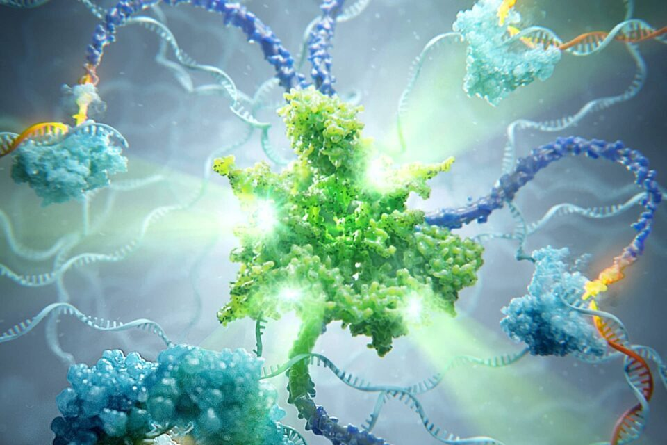

Parallel Sequencing Technologies
대량 병렬 시퀀싱과 DNBSEQ
클론 증폭과 신호 검출 / 454 Illumina SOLiD Ion Torrent / DNBSEQ와 중간 기술 / 기술 비교와 문제
송영준 Youngjun Song / 인천대학교 / 75분
병렬 시퀀싱의 분자 단위
- 서로 다른 DNA를 위치별로 분리
- 각 위치에서 같은 서열의 신호 축적
- 위치마다 반응 주기를 반복
- 수많은 read의 동시 생성
https://www.illumina.com/science/technology/next-generation-sequencing/sequencing-technology.html
Emulsion PCR
- 물방울 안에서 하나의 주형과 비드를 분리
- 프라이머가 결합된 비드에서 증폭
- 같은 서열의 많은 사본을 가진 비드
- 물방울·비드의 점유율과 혼합 비드 문제
- 주형과 비드의 분산
- 물방울 반응기 형성
- 물방울 내부 PCR
- 증폭 비드의 회수·배열
https://www.illumina.com/science/technology/next-generation-sequencing/sequencing-technology.html
Bridge amplification

- 표면 프라이머와 DNA adapter의 결합
- 표면에서 상보 가닥 합성
- 휘어진 가닥의 이웃 프라이머 결합
- 국소 cluster로 신호 확대
Pyrosequencing 파이로시퀀싱
- 고정된 단일가닥 주형 + 프라이머 · dNTP를 한 종류씩 차례로 흘림
- 맞는 dNTP가 붙으면 PPi 방출 → 효소 연쇄 → 빛 · 안 붙으면 빛 없음
- apyrase가 남은 dNTP · ATP 분해 → 세척 없이 다음 흐름
- dATP 대신 dATPαS — dATP는 루시페라제 기질이라 배경 빛을 냄
PPi + APS → ATP + SO₄²⁻ (ATP sulfurylase)
ATP + 루시페린 + O₂ → 빛 (루시페라제)
- 흐름 순서 T → A → C → G, 주형이 새 가닥 G AAA CC를 요구
- T: 0 · A: 0 · C: 0 · G: 빛 1 → A: 빛 3 → C: 빛 2
- 막대 높이를 흐름 순서대로 풀면 G AAA CC
- 종결자가 없으므로 같은 염기 연속(호모폴리머)은 한 흐름에 한꺼번에 붙음
파이로시퀀싱의 신호 변환
- DNA polymerase: 도입과 PPi 방출
- ATP sulfurylase: PPi를 ATP 생성에 연결
- Luciferase: ATP를 빛 생성에 이용
- 남은 시약의 제거 후 다음 흐름
- 염기의 도입
- PPi 방출
- ATP 생성
- 발광과 신호 기록
https://www.illumina.com/science/technology/next-generation-sequencing/sequencing-technology.html
Flow 방식과 homopolymer 길이
한 흐름에 같은 염기 n개 결합 → PPi n개 → I ≈ n · I₁
판정 기준 = I/I₁을 가장 가까운 정수로 반올림
1 vs 2 → 신호 2배(100% 차이) — 쉬움
7 vs 8 → 8/7 ≈ 1.14(14% 차이) — 잡음 · 효소 포화에 묻힘
잡음이 ±10%면 n ≥ 5부터 판정이 흔들림 (예시)
틀린 dNTP는 거의 안 붙음 → 치환은 드묾
주 오류 = 호모폴리머 길이 오류(삽입 · 결실, indel) — 454 · Ion Torrent · Ultima 공통
교육용 신호 크기 모형 / https://doi.org/10.1126/science.281.5375.363
Roche 454의 시스템 구성
- Emulsion PCR 비드의 준비
- PicoTiterPlate의 작은 웰에 비드 적재
- 염기 흐름과 광학 발광 검출
- 역사적 플랫폼으로 현재 Roche SBX와 구분
Illumina reversible terminator SBS
- 뉴클레오타이드 3′-OH를 3′-O-azidomethyl로 막고, 염기마다 다른 형광을 절단 가능한 링커로 부착
- 네 종류를 한꺼번에 넣어도 한 염기만 결합 → 영상 촬영 → 종결기 · 형광 절단 → 3′-OH 복원 → 다음 주기
- 주기 수 = read 길이 (예: 150 주기 → 150 nt)
- 주형 상보 서열 A A A C — 파이로: 한 흐름에 A 3개가 한꺼번에(빛 3배)
- SBS: 주기 1 A · 주기 2 A · 주기 3 A · 주기 4 C — 한 주기 한 염기
- → 호모폴리머 길이를 “세기”로 재지 않음 → indel 드묾 · 주 오류는 치환
https://www.illumina.com/science/technology/next-generation-sequencing/sequencing-technology.html
SBS 주기의 순서

- 상보적인 형광 뉴클레오타이드의 도입
- 여러 cluster의 형광 촬영
- 위치별 염기 호출
- 형광·차단기 제거 후 다음 도입
- 도입
- 촬영
- Base call
- 표지·차단기 제거
https://www.illumina.com/science/technology/next-generation-sequencing/sequencing-technology.html
Phasing과 prephasing
한 주기에 박자를 놓칠(덜 붙거나 · 먼저 붙을) 확률 p → n 주기 뒤 제 박자 분자 비율 ≈ (1 − p)ⁿ
| p | n = 75 | n = 150 | n = 300 |
|---|---|---|---|
| 0.1% | 0.93 | 0.86 | 0.74 |
| 0.5% | 0.69 | 0.47 | 0.22 |
p = 0.5%, n = 150 → 0.995¹⁵⁰ ≈ e−0.75 ≈ 0.47 → 신호 절반이 앞뒤 박자 잡음 (예시 값)
→ read 뒤쪽 품질 하락 · 2×150 paired-end로 양쪽에서 나눠 읽는 이유
https://www.illumina.com/science/technology/next-generation-sequencing/sequencing-technology.html
광학 채널과 염기 부호
염기마다 고유색 1개 → 주기마다 네 채널 촬영
두 채널만 촬영 · A는 두 색 모두(또는 혼합 표지) · G는 표지 없음 → 산점도의 네 군집으로 판정
염기 4종 = log₂ 4 = 2 bit · 채널 c개가 각각 켜짐/꺼짐이면 2ᶜ 상태 → c = 2면 충분 · 1색(iSeq 100)은 한 염료 + 화학 단계 두 장의 영상으로 같은 2 bit
첫 주기들의 염기 다양성이 낮으면(같은 프라이머) 색 보정 실패 → PhiX를 섞어 다양성 보충
https://www.illumina.com/science/technology/next-generation-sequencing/sequencing-technology.html
Illumina 공식 SBS 영상

Illumina (5:13)YouTube에서 보기
영상의 관찰 항목
- 표면 cluster의 생성
- 도입·촬영·제거 주기
- Read 1과 Read 2의 연결
- 실제 장비의 광학 판독 방식
https://www.illumina.com/science/technology/next-generation-sequencing/sequencing-technology.html
SOLiD sequencing by ligation
중합효소 대신 DNA 리가아제가 맞는 형광 8-mer 프로브를 붙임 → 촬영 → 절단 → 반복 · 프라이머를 1염기씩 옮겨 5라운드 · 에멀전 PCR 비드
색 공간 = 측정 채널에 넣은 부호 — 오류 검출 · 원시 정확도 > 99.9%(McKernan 2009) ↔ DNA 저장은 쓰기 단계에 부호를 넣음
짧은 read · 색 공간 해석 도구가 복잡 → 단종(Life Tech → Thermo)
SOLiD의 color space
- 인접 염기 쌍을 색 부호로 기록
- 시작 염기를 알면 색열에서 서열 복원
- 하나의 잘못된 색과 실제 변이의 영향 차이
- 현행 SBS와 다른 데이터 해석
Ion Torrent semiconductor sequencing
- 뉴클레오타이드가 결합할 때 PPi와 함께 H⁺ 1개 방출 → 웰의 pH 하강
- 웰 바닥의 ISFET(이온 감응 전계효과 트랜지스터)가 pH를 전압으로 변환
- 천연 dNTP를 한 종류씩 흘림 = 파이로와 같은 “흐름” 방식 → 호모폴리머는 한꺼번에
- 표준 CMOS 공정 칩 · 카메라 · 레이저 · 형광 없음
- 흐름 G에 주형이 C 1개 → 작은 전압 1단 · 흐름 A에 T 3개 → 3단
- 개략 계산: 염기당 ≈ 0.02 pH × 58 mV/pH ≈ 1.2 mV (이상적 기울기 가정)
- 3개 → ≈ 3.5 mV · 8 vs 9 → 9.3 vs 10.4 mV → 약 11% 차이 → 판정 어려움
https://tools.thermofisher.com/content/sfs/brochures/cms_090197.pdf
Ion Torrent 웰 비드 ISFET
표준 CMOS 칩 · 첫 칩 약 120만 웰 · 광학 없음 → “무어의 법칙을 타는 시퀀서” · Gordon Moore 게놈 판독
Rothberg(454 창업자) → Ion Torrent → Life Technologies 인수(2010) → Thermo Fisher(2014) · 현재 임상 표적 패널 · 빠른 소요 시간(Genexus) 중심
검출기 = 트랜지스터 배열 → 카메라 없이 칩을 바꾸면 처리량 증가 · 칩 = 소모품
https://tools.thermofisher.com/content/sfs/brochures/cms_090197.pdf
Ion Torrent 공식 원리 영상

Thermo Fisher Scientific (3:24)YouTube에서 보기
영상의 관찰 항목
- 한 종류씩 공급되는 dNTP
- 염기 도입과 H⁺ 신호
- 웰 아래 반도체 검출기
- 발광 파이로시퀀싱과 신호 경로 비교
https://tools.thermofisher.com/content/sfs/brochures/cms_090197.pdf
DNBSEQ의 분자 구조
- DNA nanoball: 같은 원형 주형의 반복 복사 산물
- 한 나노볼에 같은 서열의 많은 사본
- 나노볼의 공간 배열 후 광학 판독
- 단일분자 판독과 구분
DNBSEQ 라이브러리의 원형화
- Adapter를 가진 DNA 조각 준비
- 단일가닥으로 전환
- Splint와 ligase로 양끝 연결
- 완성된 single-stranded circle 선택
- 선형 라이브러리
- 단일가닥 전환
- Splint 결합과 연결
- 원형 주형 확보
Rolling Circle Amplification RCA
- 원형 주형을 따라 연속 신장
- 한 가닥 안에 반복된 사본의 연결
- 원래 circle을 반복하여 읽는 복제
- PCR의 열 주기·지수 증폭과 구분
- 원형 주형과 프라이머
- 중합효소의 연속 복제
- 반복 사본이 연결된 긴 가닥
- 압축된 DNA nanoball
나노볼과 패턴 배열
- 만들어진 DNB를 고정된 위치에 적재
- 정해진 자리별로 광학 신호 구분
- 위치 혼합과 빈 자리의 관리
- 원형 주형 수와 읽히는 DNB 수의 구분
cPAS와 염기 판독
- Combinatorial Probe-Anchor Synthesis
- Adapter·anchor를 기반으로 판독 위치 설정
- 염기 신호의 촬영과 주기 반복
- 초기 cPAL ligation과 현재 cPAS의 구분
DNBSEQ 공식 개관 영상

Complete Genomics (0:56)YouTube에서 보기
영상의 관찰 항목
- 원형화와 반복 복제
- 나노볼 형성과 flow cell 적재
- 광학 신호에서 read 생성
Element avidity sequencing

- RCA 기반 polony의 준비
- 다중 결합 avidite로 염기 인식
- 염기 인식과 한 칸 신장을 분리
- 검출 시약 농도와 결합 안정성의 설계
- 원형 주형의 polony 형성
- Avidite 결합과 염기 인식
- 인식 표지 제거
- 한 염기 신장과 다음 주기
https://www.elementbiosciences.com/technology/avidite-base-chemistry
Sequencing by Binding SBB
- 효소-뉴클레오타이드의 상보 결합을 검출
- 검출 단계와 염기 도입 단계를 분리
- Onso의 2024년 공개 기술 자료를 사례로 사용
- 단일분자 SMRT와 다른 short-read 화학
https://www.pacb.com/wp-content/uploads/SBB-Product-note.pdf
Ultima mostly natural SBS
- 한 종류의 염기를 흐름별로 공급
- 일부 표지 기질의 신호로 도입을 검출
- 열린 wafer 표면의 액체 분배와 광학 스캔
- Homopolymer 길이 추정의 필요
증폭 방식과 판독 화학 비교
| 기술 | 주형 신호 확대 | 측정 신호 |
|---|---|---|
| 454 | 비드 emPCR | PPi 연쇄 발광 |
| Illumina | Cluster | 형광 SBS |
| SOLiD | 비드 emPCR | Ligation 색 공간 |
| Ion Torrent | 비드 emPCR | pH·전압 |
| DNBSEQ | 원형 주형 RCR | 광학 cPAS |
| Element | RCA polony | Avidite 결합 |
| Ultima | 비드 | Flow 광학 |
- Emulsion PCR과 bridge 증폭
- RCA 나노볼·polony
- 가역 종결자 SBS와 ligation
- 이온 검출과 결합 기반 검출
https://www.illumina.com/science/technology/next-generation-sequencing/sequencing-technology.html
오류 유형과 데이터 저장
- 치환: 틀린 염기 호출
- 삽입·삭제: 반복 길이·동기화 문제
- Dropout: 분자·증폭·적재·판독 단계의 손실
- 오류율과 read당 독립성의 구분
https://www.illumina.com/science/technology/next-generation-sequencing/sequencing-technology.html
병렬 시퀀싱 확인 문제
- DNBSEQ에서 circle·RCA·나노볼·cPAS의 순서
- Sanger의 ddNTP와 SBS의 가역 종결자 비교
- Ion Torrent와 454의 검출 신호 비교
- Avidity·SBB에서 인식과 신장을 분리하는 이유
확인·실습 문제
새 플랫폼의 증폭 방식·판독 화학·검출기를 각각 한 문장으로 분리하여 설명
https://www.illumina.com/science/technology/next-generation-sequencing/sequencing-technology.html